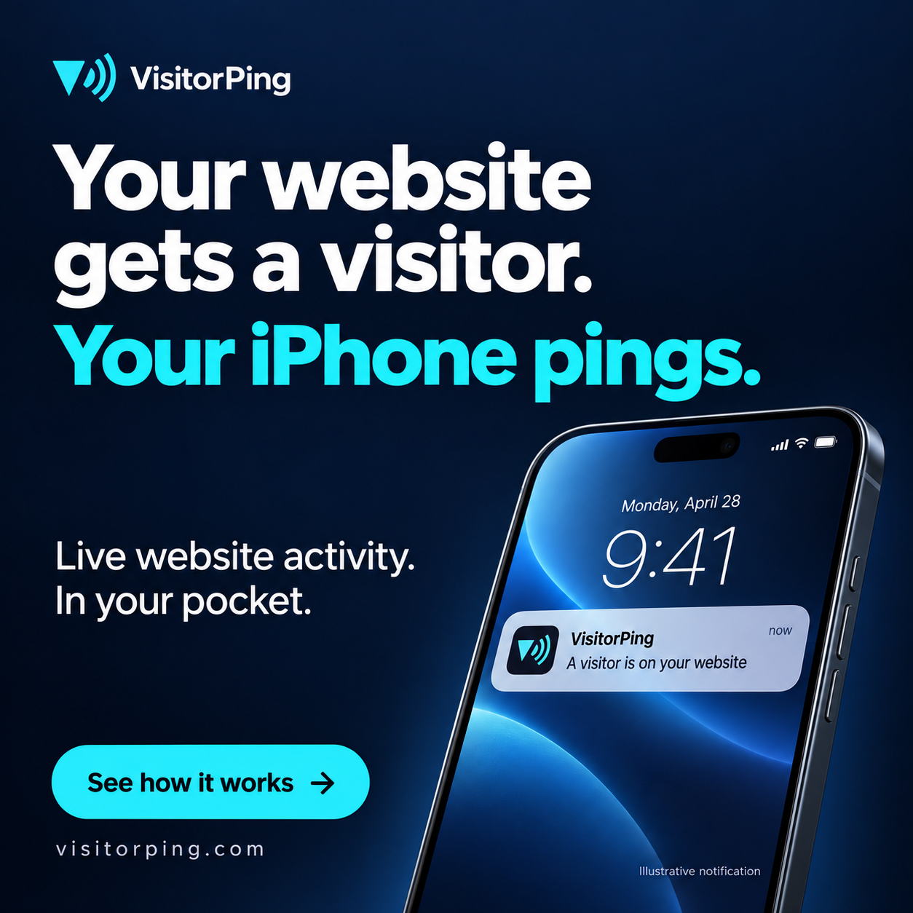
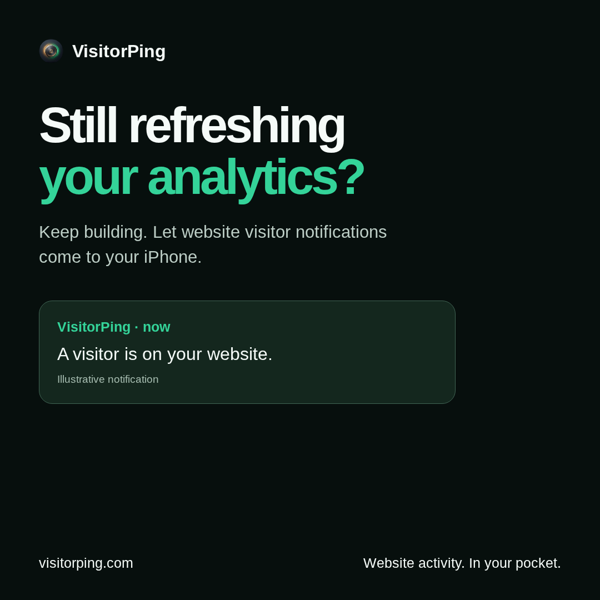

Download ad AYour first visitors.
Your first campaign.
A founder-focused campaign built around one visible benefit: website activity arriving on your iPhone.
Preview landing pageDownload campaign settingsReady-to-use creative
{kind=link}

Download ad B{kind=link}
15-second product explainer
Silent, captioned explainer. Uses VisitorPing’s existing interactive-preview screenshot and a clearly labelled illustrative notification. This is not a recording of a real customer.
Download MP4Ad copy and tracked destinations
Your website gets a visitor. Your iPhone pings.
Just launched your website? See visitor activity in a live dashboard and receive notifications on your iPhone. Meet VisitorPing.
https://visitorping.com/for-founders?utm_source=reddit&utm_medium=paid_social&utm_campaign=founder_first_visitors_202609&utm_content=notification_a
Still refreshing your analytics?
Keep building. VisitorPing brings website visitor notifications to your iPhone, with a live dashboard when you want to look closer.
https://visitorping.com/for-founders?utm_source=reddit&utm_medium=paid_social&utm_campaign=founder_first_visitors_202609&utm_content=refreshing_b
The launch settings
One audience
Solo founders with recently launched websites. Start with English-language US traffic and eligible founder communities.
One bounded test
Proposed: $100 total across seven days. Two creatives, one audience. Budget is not yet approved; no spend has started.
One useful signal
Look for newly connected websites recording their first real visitor. Signups, installs and payment remain supporting measures.
Publication status
Assets are prepared. The production landing route is implemented but not deployed. Google Ads OAuth returned invalid_grant; Reddit account access is not connected. No ads or posts have been published.
Campaign tags are included in the landing and signup URLs. Per-campaign activation attribution still needs verification before reporting acquisition costs.